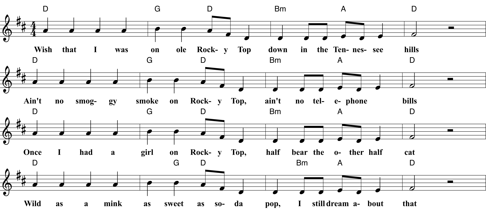
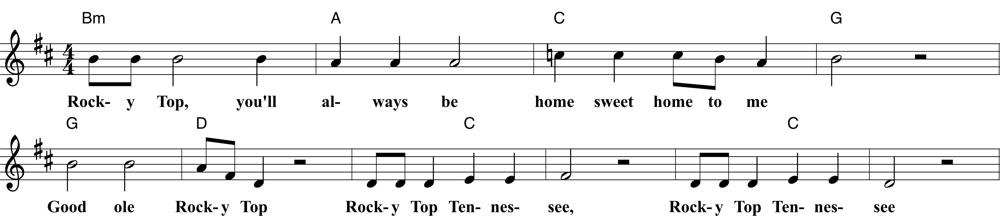

| D | G | D | Bm | A | D |
| Once two strangers | climbed ole | Rocky Top | lookin’ for a | moonshine | still. |
| D | G | D | Bm | A | D |
| Strangers ain’t come | down from | Rocky Top, | reckon they | never | will. |
| D | G | D | Bm | A | D |
| Corn won’t grow at | all on | Rocky Top, | dirt’s too | rocky by | far. |
| D | G | D | Bm | A | D |
| That’s why all the | folks on | Rocky Top | get their | corn from a | jar. |
| D | G | D | Bm | A | D |
| I’ve had years of | cramped up | city life; | stuck like a | duck in a | pen. |
| D | G | D | Bm | A | D |
| All I know is | it’s a pity | life can’t be | simple a | gain. |